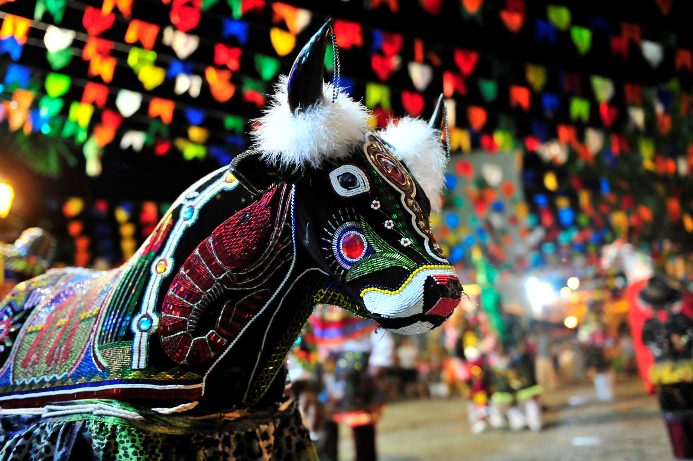

O Bumba meu boi, também chamado de Boi-Bumbá, é uma dança tradicional brasileira típica das regiões norte e nordeste.
Embora tenha maior representatividade nas culturas dessas regiões, atualmente podemos encontrar essa manifestação cultural em todas as partes do Brasil.
Em 2012, o Bumba meu boi foi incluído na lista de Patrimônio Cultural do Brasil pelo Instituto do Patrimônio Histórico e Artístico Nacional (IPHAN).
O Bumba meu boi tem origem na Europa do século XVI, mais especificamente na Península Ibérica.
Diz-se que havia um conto ibérico de enredo muito semelhante ao da história da lenda do Bumba meu boi difundida no Brasil.
Quando chegou ao território brasileiro trazida pelos colonizadores portugueses, a história foi se modificando ao incluir alguns aspectos das culturas africana e indígena.
Foi durante o período colonial, com a escravidão e a criação de gado, que a lenda associada a essa manifestação teve sua origem tal qual a conhecemos hoje.
Principais características
A festa em celebração ao Bumba meu boi inclui danças, músicas, desfiles e representação teatral. Assim, as cores se misturam em um ambiente festivo, alegórico e popular.
A música envolve diversos instrumentos como o violão, o cavaquinho, o pandeiro, o chocalho, o triângulo, a zabumba, a matraca, etc.
O ritmo predominante é chamado de toada, um estilo de cantiga simples e regional, formada por estrofes e rimas.
Na apresentação teatral o boi é o personagem principal, mas também estão presentes o fazendeiro, o vaqueiro e sua mulher.
Essa encenação lúdica é caracterizada pela união do humor, da sátira, do drama e da tragédia. Enquanto a história do boi é declamada por um narrador, os personagens dançam.
O enredo gira em torno da morte à ressurreição do boi, e tem como destaque a fragilidade humana, em detrimento da força bruta do animal.

Note que na história, os nomes dos personagens e suas respectivas vestimentas podem apresentar algumas variações consoante as diferentes regiões do Brasil.
O primeiro registro do Bumba meu boi no Brasil aconteceu em Pernambuco. No entanto, o estado onde essa manifestação cultural é mais popular é o Maranhão.
Festa do Bumba meu boi no Maranhão
Inserido na cultura popular, é no estado do Maranhão que a festa do Bumba meu boi tem maior representatividade, nas festas em comemoração aos santos populares.
A festa ocorre nos meses de junho e julho, em São Luís, desde o século XVIII.
Festa do Bumba meu boi no Amazonas
Merece destaque também a cidade de Parintins, no estado do Amazonas, com o Festival Folclórico de Parintins
Trata-se de uma festa comemorada anualmente no município, desde 1965.
Como a festa do Bumba meu boi é uma das festas folclóricas mais importantes do país, no dia 30 de junho é comemorado o Dia Nacional do Bumba meu boi.

História da lenda do Bumba meu boi
No Nordeste, a história do Bumba meu boi foi inspirada na lenda da Mãe Catirina e do Pai Francisco (Chico).
Nessa versão, Mãe Catirina e Pai Francisco são um casal de negros trabalhadores de uma fazenda. Quando Mãe Catirina fica grávida, ela tem desejo de comer a língua de um boi.
Empenhado em satisfazer a vontade de Catirina, Chico mata um dos bois do rebanho, que, no entanto, era um dos preferidos do fazendeiro.
Ao notar a falta do boi, o fazendeiro pede para que todos os empregados saiam em busca dele.
Eles encontram o boi quase morto, mas com a ajuda de um curandeiro ele se recupera. Noutras versões, o boi já está morto e com o auxílio de um pajé, ele ressuscita.
A lenda, dessa maneira, está associada ao conceito de milagre do catolicismo ao trazer de volta o animal. Ao mesmo tempo, mostra a presença de elementos indígenas e africanos, tal como a cura pelo pajé ou curandeiro e a ressurreição.
A festa do Bumba meu boi é celebrada para comemorar esse milagre.
Curiosidades
• Só no Estado do Maranhão existem mais de 100 grupos de Bumba meu boi e cada um apresenta particularidades próprias.
• Por ter um cariz popular, a celebração do Bumba meu boi já foi vetada pela sociedade brasileira entre os anos de 1861 e 1868.